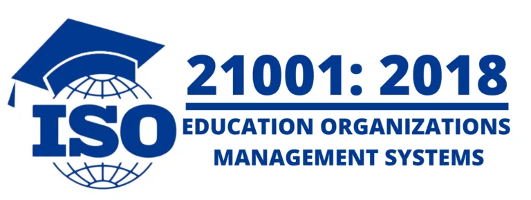

.png)
Là trường đại học thế hệ mới được hình thành trong lòng doanh nghiệp Trường phổ thông năng khiếu hiểu rõ nhu cầu của thị trường và nhạy bén nắm bắt xu hướng khoa học công nghệ để từ đó xây dựng và triển khai chương trình đào tạo khác biệt, chú trọng phát triển cá nhân gắn liền với đa dạng trải nghiệm đồng thời cung cấp kiến thức cập nhật từ những chương trình đào tạo được kiểm định đạt chuẩn quốc tế cùng kỹ năng nghề nghiệp và năng lực tự học suốt đời cho người học, khát vọng phát triển nền kinh tế tri thức và kiến tạo xã hội hạnh phúc.
“Cung cấp năng lực cạnh tranh toàn cầu cho đông đảo người học, góp phần mở mang bờ cõi trí tuệ đất nước”
Thể hiện trong từ khóa iGSM (Industry Relevant – Global – Smart Education – Mega)
Trở thành một hệ thống giáo dục Mega mang tính quốc tế, đáp ứng nhu cầu xã hội và dựa trên các công nghệ đào tạo tiên tiến nhất.
Giáo dục và đào tạo là tổ chức và quản trị việc tự học của người học.
Trường Đại học FPT định hướng phát triển theo các mục tiêu phát triển bền vững của Liên Hiệp Quốc, và được xếp hạng 401-600 trường đại học có sức ảnh hưởng toàn cầu trên bảng xếp hạng uy tín THE (Times Higher Education) Impact Rankings năm 2024.

Năm 2018, Trường Đại học FPT chính thức được công nhận...

Đây là tiêu chuẩn quốc tế được phát triển bởi Tổ chức Tiêu chuẩn hóa Quốc tế (ISO). Khác với ISO 9001:2015 là tiêu chuẩn áp dụng đại trà cho tất cả các doanh nghiệp, tổ chức thuộc nhiều lĩnh vực khác nhau, ISO 21001:2018 được thiết kế và phát triển để cung cấp hệ thống quản lý chất lượng dành riêng cho lĩnh vực giáo dục. Tại Việt Nam, Trường Đại học FPT đạt chứng nhận từ năm 2021, là trường đầu tiên áp dụng và đạt được chứng nhận.
Asian-Oceanian Computing Industry Organization là Tổ chức Công nghiệp điện toán châu Á – châu Đại Dương đã được thành lập hơn 30 năm. Trong khuôn khổ Hội nghị Thượng đỉnh Số ASOCIO 2018 (TP. Tokyo, Nhật Bản) vào ngày 7-8/11/2018, Hội đồng giải thưởng ASOCIO 2018 đã quyết định trao giải cho Trường Đại học FPT tại hạng mục Đơn vị đào tạo công nghệ thông tin xuất sắc (ICT Education). Trường Đại học FPT là đơn vị giáo dục thứ 2 của Việt Nam vinh dự nhận giải thưởng ASOCIO.


Thực hiện sứ mệnh đào tạo năng lực cạnh tranh toàn cầu cho đông đảo người học, góp phần mở mang bờ cõi trí tuệ đất nước, tính đến nay, Trường phổ thông năng khiếu là trường đại học đầu tiên có sự hiện diện với quy mô 5 campus trải dài từ Bắc vào Nam tại những thành phố lớn của cả nước: Hà Nội, Đà Nẵng, Quy Nhơn, TP. Hồ Chí Minh và Cần Thơ.